AI Academy · Level 3 · Grade 8 · Week 14 · Student lesson
Hallucination Failure Types
Learn to understand, design, build, test and explain AI systems responsibly.
Project: Verified Study Buddy
Before you start
Week 6: a citation must support its attached claim.
Plan time to read, investigate and explain. Keep predictions separate from observations.
Student lesson · 1 of 18
Your mission
Start with the target: Explain the mechanism and terminology of generation failures and verification. Try the recall before opening notes.
Your learning target
I can explain the mechanism and terminology of generation failures and verification.
I can apply the stated procedure to a new case with a traceable result.
I can identify an assumption or limitation and design a revealing follow-up.
Remember before reading
Close your notes first. A rough first answer helps us choose the right starting point; it is not a score for your ability.
Without opening the old lesson, explain one key idea from Multimodal Evidence. Give an example and a mistake that the idea helps you avoid.
Without opening the old lesson, explain one key idea from Visual Composition. Give an example and a mistake that the idea helps you avoid.
Without opening the old lesson, explain one key idea from Structured Output and Schemas. Give an example and a mistake that the idea helps you avoid.
After trying, check the relevant lesson or ask your teacher. Change the part of your explanation that the evidence shows was wrong.
Week 14: Hallucination Failure Types
Fluent output may contain unsupported claims, fabricated detail, or faulty inference.
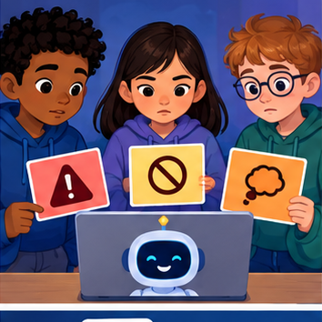
CREATOR MISSION
Tag claims in an answer and classify each failure type.
Creator name and date:
Readiness for the connected explanation
Recall Controlled prompt experiments. Explain why a recorded result needs its input conditions and evidence source before it can support a claim.
This week’s end goal
By the end, I can distinguish supported, contradicted and unsupported generated claims.
Student lesson · 2 of 18
Notice the evidence
Investigate the supplied Hallucination Failure Types case. Separate observations, given facts and assumptions before choosing an explanation.
PICTURE STORY
Notice → Predict → Explain
Begin with visible evidence. Do not explain more than the picture and information support.
Start with this puzzle
MYSTERY
The learners must use hallucination failure types to solve a problem. What information do they have? What decision or calculation do they make? What would count as evidence that it worked?
Three observations (what you can point to):
My prediction and the clue supporting it:
A closer explanation
Generated answers may invent facts, misread quantities or cite irrelevant passages. Verification checks each claim against evidence rather than accepting fluent wording.
Begin by writing the question the procedure is intended to answer. Identify the information already supplied, the information it will produce and the information still missing.
These are constructed classroom examples; they do not require live accounts, private records or an external service. Do not treat a plausible explanation as a measured outcome.
Student lesson · 3 of 18
See how it works
Follow the mechanism for Hallucination Failure Types. Connect each labelled input, deciding step and result.
VISUAL MECHANISM
Input → Process → Output
Trace the information. At each stage, ask what changed and how you could test it.
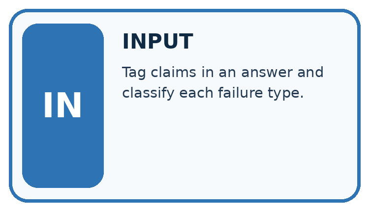
↓
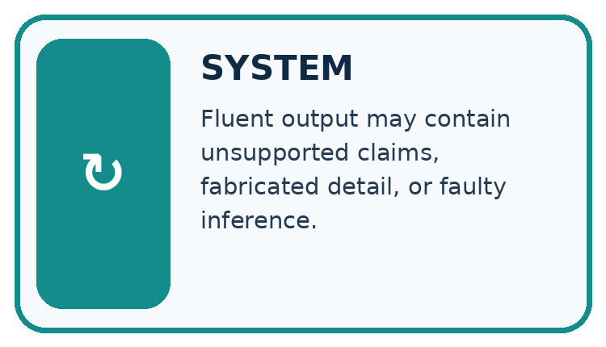
↓
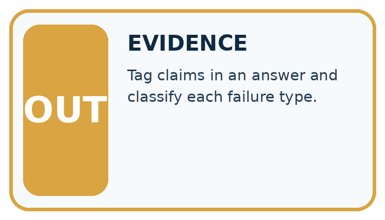
Which stage could fail even when the other two are correct? Explain:
A closer explanation
Split an answer into atomic claims. For each, record the exact source passage, support status and any needed calculation. Mark unsupported and contradicted claims separately; do not repair them by inventing sources.
Generation failures and verification — evidence trace
Before applying the procedure, write its units, denominator or decision boundary where relevant. A partner should be able to repeat each step using the same inputs.
If a required input is absent or violates the stated contract, record that condition explicitly instead of quietly replacing it with a convenient value.
Connect the picture and the explanation
Point to the input, the deciding step and the result in this week’s visual. Explain the same step in ordinary words. A picture helps when you can say what each part represents.
Student lesson · 4 of 18
Compare the cases
Compare the supplied cases for Hallucination Failure Types. Identify the detail that changes the conclusion.
The case to investigate
CASE GALLERY
Four Tests, Four Kinds of Evidence
A system is not understood until it survives more than one comfortable example.


The normal case
NORMAL CASE: predict and name evidence. BOUNDARY CASE: predict and name evidence.


Check missing information
MISSING INFORMATION: predict and name evidence. TRANSFER CASE: predict and name evidence.
Which case is most likely to reveal a hidden assumption? Why?
Change one thing in the pictured case
Change one thing
Change: Add a planned 30-minute stop while preserving speed and distance.
Predicted result
Prediction: Planned total elapsed time becomes 3.5 hours.
Why the result follows
Reason: Three moving hours plus half an hour stopped; walking-time calculation itself stays three.
Student lesson · 5 of 18
Words that unlock the idea
Use the vocabulary of Hallucination Failure Types to explain a concrete decision, rather than only memorising definitions.
VOCABULARY LAB
Words You Can Use to Reason
A definition matters when you can recognize the idea, use it, and contrast it with a near-miss.
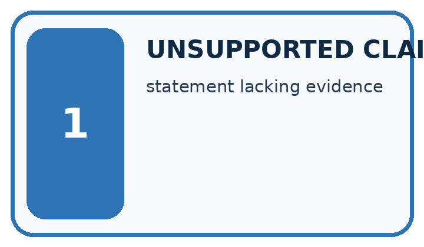
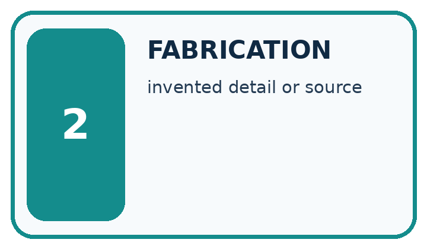
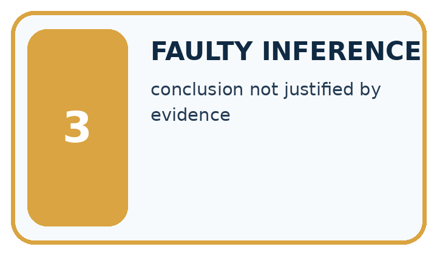
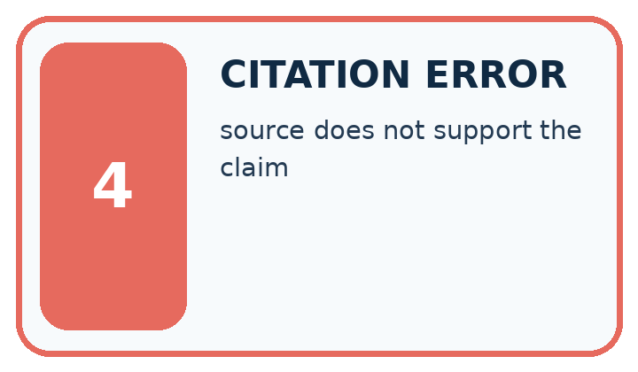
| Word | My own example | Not this / boundary |
|---|---|---|
| unsupported claim | A statement for which the supplied evidence does not establish the asserted conclusion. | |
| fabrication | Invented information presented as if it were established fact. | |
| faulty inference | A conclusion that does not follow from the available premises or evidence. | |
| citation error | A reference that is wrong, missing or does not support the claim attached to it. |
Words used in the closer explanation
| Word | Meaning |
|---|---|
| Atomic claim | A single factual statement checked separately |
| Contradicted | Inconsistent with the supplied evidence |
| Unsupported | Not established by the available evidence |
Student lesson · 6 of 18
Follow a worked example
Follow the worked trace for Hallucination Failure Types, predict a step, then compare with its explanation.
WORKED EVIDENCE
Reason Step by Step
Predict first. Then check each step. A correct answer without visible reasoning is incomplete evidence.
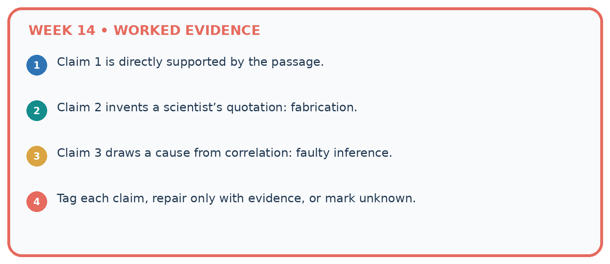
1. Claim 1 is directly supported by the passage.
2. Claim 2 invents a scientist’s quotation: fabrication.
3. Claim 3 draws a cause from correlation: faulty inference.
4. Tag each claim, repair only with evidence, or mark unknown.
Recalculate, retrace, or restate the reasoning in your own representation:
CHECK Did the evidence answer the exact question? Did the total, path, or source record stay consistent?
A closer explanation
Source R says room B seats 12 and the meeting starts at 15:00. Generated answer says B seats 20, starts at 15:00 and includes free lunch.
Capacity 20 is contradicted; 15:00 is supported; free lunch is unsupported. One of three claims has support. The missing lunch fact is not evidence of no lunch.
Worked explanation · Hallucination Failure Types
Compare the intermediate evidence with the final statement. Explain why each number or decision follows from the stated inputs.
The conclusion belongs to this scenario and procedure; changing the inputs, evaluation population or authority can change what it establishes. Retain the raw record so a later revision can be compared honestly.
Learn from the worked case
Cover the result before checking it. Say what is given, choose the procedure, and follow one step at a time. Then uncover the result and explain your first mismatch. Ask why a step is allowed, not only what number it produces.
A pictorial worked case: Hallucination Failure Types
A fictional Study Buddy drafts a field-trip summary from one approved record.
The facts we will use
Supplied facts
Source S: trail length 12 km; planned constant speed 4 km/h, excluding stops; departure 09:00.
Supplied facts
Draft: “The walk takes two hours, starts at 09:00 and includes free lunch.” No lunch record is supplied.

Read the picture one step at a time
Why this result follows
Why the result follows
Different errors need different repairs. Recalculate the duration; keep the supported departure; remove or seek evidence for lunch. These categories are more informative than calling the whole answer wrong.
Arithmetic inherits assumptions such as constant speed and no stops, so avoid turning the three-hour walking calculation into a guaranteed arrival time.
What this example does not establish
Keep the stated limit
The fictional plan does not establish actual speed, delays or what eventually occurred on a real trip.
Keep the stated limit
Read the labelled picture: Can we conclude there will definitely be no lunch from S alone?
Keep the stated limit
Change one thing: Add a planned 30-minute stop while preserving speed and distance. Predict the result before checking the explanation. What remains the same?
Student lesson · 7 of 18
Find and repair a mistake
Find the unsupported step in the Hallucination Failure Types claim and explain a repair using the supplied evidence.
Find the first error
ERROR DETECTIVE
Compare → Diagnose → Repair
Do not patch the answer. Find the earliest unsupported assumption, wrong step, or weak evidence.
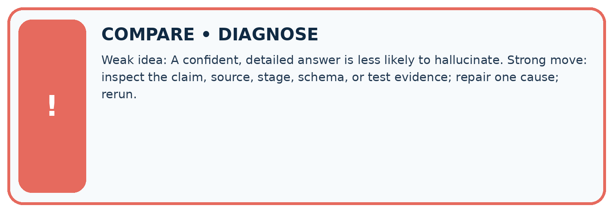
| Evidence record | Expected | Actual | Likely cause / next test |
|---|---|---|---|
| normal case | works | ||
| boundary case | stated rule | ||
| missing input | safe response | ||
| fresh transfer | generalizes |
Repair one cause. Why is this repair better than changing several things?
A closer explanation
Check the claim against the facts
Complete the supported workbook tasks before attempting W4 independently. Record any hints or help used. After feedback, use the teacher's fresh retry rather than copying the earlier answer.
For a project, select a relevant new case, predict the outcome from the declared rule and preserve the result alongside any revision.
Student lesson · 8 of 18
Practise together
Practise Hallucination Failure Types with support, then explain the deciding step in your own words.
LOGIC STUDIO
Specify Before You Run
Prompts, schemas, retrieval, tool calls, and code are inspectable parts of one AI product.

SET task, audience, constraints, output_schema LOAD approved_context or retrieval_result CALL model or allowed_tool VALIDATE fields, claims, citations, and safety IF evidence missing: ask, retrieve, or abstain RETURN useful output + source trail + limitations
Trace one input. Which line changes the state or chooses a path?
A closer explanation
Source agreement and arithmetic validity are separate checks; missing evidence is not proof of the opposite claim.
A useful check asks what would make the reasoning fail. Distinguish a failure to execute the declared procedure from a weakness in the procedure itself.
The first may require a correction; the second requires an explicitly revised method and new evidence. Preserve unsuccessful cases so an improved result cannot hide the original problem.
Practise with less help: Trace the worked case
Use workbook W2 for the connected example “Generation failures and verification”. First fill the input and rule boxes. Try the middle steps before asking for a hint. After a hint, try the next step yourself.
| Plan | Do | Check |
|---|---|---|
| What is given? Which rule or procedure applies? | Record each intermediate step. | Does the result follow? What remains unknown? |
Explain your trace to a partner. Your partner points to one step to check. Swap roles on the next case. Each person writes their own explanation.
Check your reasoning
Use the worked case for Generation failures and verification. Proposed explanation: “The worked result establishes every future case”. Decide whether this explanation is supported.
Point to the step or supplied fact that decides; explain your repair if needed.
Answer on your own before discussion. If you are unsure, say which step you need help with.
Explain the picture
Can we conclude there will definitely be no lunch from S alone?
This is supported practice. Keep the separately named independent case for an attempt before feedback.
Student lesson · 9 of 18
Run the investigation
Investigate Hallucination Failure Types. Record the prediction, actual observation or labelled paper trace, explanation and next test separately.
EVIDENCE LAB
Predict → Test → Record → Explain
Keep expected and actual results separate. Surprises are useful data when recorded honestly.
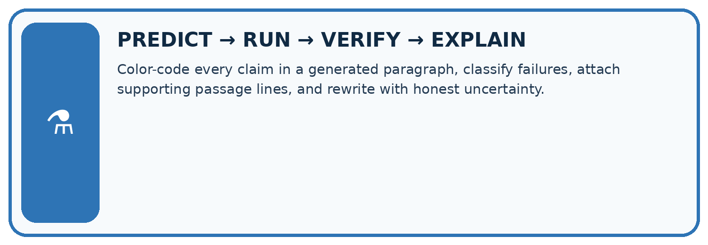
Color-code every claim in a generated paragraph, classify failures, attach supporting passage lines, and rewrite with honest uncertainty.
| Test / input | Prediction | Actual | Evidence / calculation | Change or keep? |
|---|---|---|---|---|
| normal | ||||
| boundary | ||||
| missing | ||||
| fresh transfer |
What did the hardest test teach you that the normal test did not?
Plan → try → check
Before trying: what do I expect, and why? While trying: which step could first go wrong? Afterwards: what did I actually observe, and what should change? Keep “not run” if you only traced the procedure.
Student lesson · 10 of 18
Build your understanding
Move from recall to tracing, diagnosis and transfer in Hallucination Failure Types. Explain why each step is justified.
MASTERY
From Knowing the Word to Owning the Idea
Move upward only when you can produce evidence without copying the worked example.

1 • NAME: Define the concept without repeating the textbook.
2 • TRACE: Show the information, state, branch, calculation, or evidence path.
3 • APPLY: Solve a different example independently.
4 • CHALLENGE: Find a boundary case, counterexample, or unfair outcome.
5 • EXPLAIN LIMITS: Say when the result should not be trusted or used alone.
My strongest evidence of independent understanding:
Student lesson · 11 of 18
Connect your project
Apply this week’s idea to Verified Study Buddy. Keep an annotated decision and the evidence supporting it.
CUMULATIVE PROJECT
Verified Study Buddy
Every week adds one inspectable piece. The system must show how it reached a result.
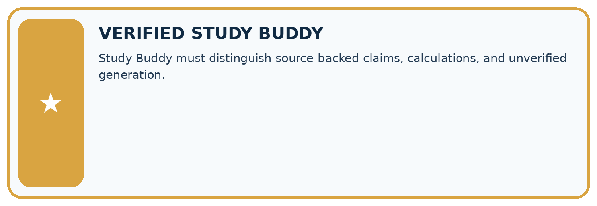
THIS WEEK’S CHECKPOINT Study Buddy must distinguish source-backed claims, calculations, and unverified generation.
Trace the system
SYSTEM MAP Learner need → prompt/schema → approved sources/retrieval → model/tool → structured answer → verification → human decision
What will you add, change, or verify in the project this week?
What should remain under human control?
Responsible design
RESPONSIBLE DESIGN Collect only necessary information. Show uncertainty and limits. Never confuse fluent output with verified truth.
Evidence for your project
Audit Study Buddy outputs claim by claim, recording contradiction, missing support and correct calculations separately.
Student lesson · 12 of 18
Show what you know
Use a genuinely new case for independent evidence. Previously discussed examples remain practice; use the separately named independent case before feedback.
Independent evidence
INDEPENDENT MASTERY PROOF
Explain • Transfer • Test • Defend
Complete this page without copying the worked example. Your reasoning matters more than decoration.
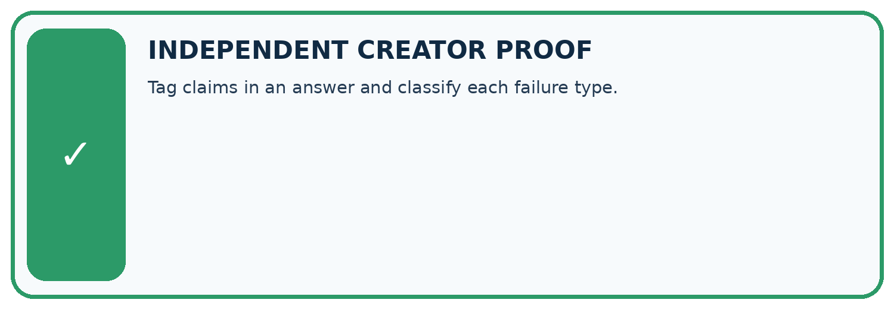
Try a more demanding case
CHALLENGE Tag claims in an answer and classify each failure type.
1. My fresh example, trace, calculation, or design:
2. My evidence that it works (include a boundary or missing-data case):
3. One limitation, fairness concern, or situation needing human review:
Check your explanation
SELF-CHECK □ I explained the mechanism □ I used evidence □ I tested a fresh case □ I named a limitation □ I can answer ‘why?’
Student lesson · 13 of 18
Study a complete case
Revisit the complete Hallucination Failure Types case for supported practice. Repeated examples do not become fresh assessments.
Week 14 Worked case
Use the supplied details to practise the weekly concept before attempting the independent question. This case extends the illustrated lesson.
The situation
An answer invents a quotation, cites a source lacking it and supplies an impossible date.
The question
Separate the failures and checks.
Worked explanation
Check exact quote text, claim-to-source support and calendar consistency independently. Each failure needs its own correction.
Explain it in your own words
Which detail supports the answer, and why does it matter?
Trace the supplied case visually
Different failures require different checks
| Evidence or stage | Value or result |
|---|---|
| Quotation | Locate exact source text |
| Citation | Check support for the claim |
| Date | Check source and calendar consistency |
| Repair | Correct or remove unsupported statements |
An answer invents a quotation, cites a source lacking it and supplies an impossible date.
Separate the failures and checks.
Check exact quote text, claim-to-source support and calendar consistency independently. Each failure needs its own correction.
Student lesson · 14 of 18
Try a new case independently
Attempt the reserved new case before feedback. Record support; the earlier examples below remain additional practice.
Independent case: Apply a new case independently
Source S: trip is 18 km; vehicle speed is 6 km/h, constant, excluding stops. Answer says 2 hours, 18 km and includes lunch. Audit and recalculate.
Attempt this case before feedback. Record any help. Earlier examples below are further practice; a case already practised with feedback cannot establish fresh transfer.
Week 14 Independent application
Close the worked explanation. Apply the idea to this different question without copying.
An answer gives a book title that does not exist and quotes words absent from the cited passage. Identify two failures and a repair.
My answer, with a trace, calculation or supporting evidence
Create and test
Change one relevant detail. Predict the result before testing. Include a boundary or missing-information case when it helps reveal a limit.
My changed input and expected result
Connect to your project
Study Buddy must distinguish source-backed claims, calculations, and unverified generation.
The evidence I will keep
Your teacher has the independent answer and scoring criteria. Complete the matching workbook week to keep your practice evidence together.
Transfer practice from the original programme
A generated answer contains a nonexistent quote, a real source unrelated to the claim and a correct sum using the wrong input. Classify the three failures and their repairs.
Use feedback to improve
Attempt the independent case before hints. Record whether you worked alone, used a hint or followed a model. After feedback, fix the first unsupported step and explain why it changed.
A later check uses a changed case, not a copied answer.
Student lesson · 15 of 18
Your lesson route
Use this map to navigate Hallucination Failure Types, connect the goals to tasks and keep one evidence record for each attempt.
Start with this question: A fictional Study Buddy drafts a field-trip summary from one approved record.
| By the end, I can | How I will show it |
|---|---|
| Explain the mechanism and terminology of generation failures and verification | Explain the deciding step, show a trace or test, and state one limit. |
| Apply the stated procedure to a new case with a traceable result | Explain the deciding step, show a trace or test, and state one limit. |
| Identify an assumption or limitation and design a revealing follow-up | Explain the deciding step, show a trace or test, and state one limit. |
Remember → watch and explain → try with help → investigate → try independently → keep project evidence. Your teacher may spread this lesson across several classes.
Keep your first prediction. Compare it with what the evidence shows and explain any change.
Student lesson · 16 of 18
Finish and return
Explain Hallucination Failure Types without notes, identify a remaining question and plan a later check with a changed case.
Close your notes. Explain this goal in your own words: Explain the mechanism and terminology of generation failures and verification
If you are unsure, return to the worked picture and explain one arrow. If you are ready, change an input or assumption and justify your prediction.
Save your workbook evidence. At the next review, try a different case before opening your old answer.
Student lesson · 17 of 18
Supported practice, repair and portfolio
Attempt supported questions before using hints or feedback. Review a missing building block, then keep the completed work.
Use this supported practice once, in the browser or on paper. Keep the reserved independent assessment for a separate first attempt before teacher feedback.
A fictional Study Buddy drafts a field-trip summary from one approved record.
Practice 1: explain the deciding evidence
Which labelled step matches this detail? Free lunch has no source; missing evidence is not a confirmed no-lunch fact.
1. Unsupported claim
2. Supported claim
3. Contradicted claim
4. Compute duration
Hint · try first
Hint if needed: Read the steps in the pictorial case. Match the supplied detail to the stage that performs or records it.
Feedback · compare after trying
After your attempt, compare with the supported explanation: Unsupported claim Free lunch has no source; missing evidence is not a confirmed no-lunch fact. Different errors need different repairs.
Recalculate the duration; keep the supported departure; remove or seek evidence for lunch. These categories are more informative than calling the whole answer wrong.
Arithmetic inherits assumptions such as constant speed and no stops, so avoid turning the three-hour walking calculation into a guaranteed arrival time.
Practice 2: explain the deciding evidence
Changed case · predict first
Changed-case practice: Add a planned 30-minute stop while preserving speed and distance. Which conclusion is supported by the supplied facts?
1. We can decide the result without examining the changed input or the procedure.
2. Planned total elapsed time becomes 3.5 hours.
3. This one example guarantees correct results for every future input.
Hint · try first
Hint if needed: Use the changed condition and the deciding step in the pictorial trace. The answer must say what follows from those facts.
Feedback · compare after trying
After your attempt, compare with the supported explanation: Planned total elapsed time becomes 3.5 hours. Three moving hours plus half an hour stopped; walking-time calculation itself stays three.
Repair a missing building block
Review Multimodal Evidence (ai-3/13). Goal: Explain the mechanism and terminology of speech pipelines and multimodal evidence.
Short practice: Why were both “exactly three” and “exactly five” unsupported before opening the box?. Return to this week and explain what you changed.
Review Visual Composition (ai-3/11). Goal: Explain the mechanism and terminology of image generation and provenance. Short practice: Which checks pass after that single change, and what still needs repair?.
Return to this week and explain what you changed.
Review Structured Output and Schemas (ai-3/8). Goal: Separate JSON parsing, schema validation and source support checks. Short practice: Which object demonstrates that valid JSON and valid types are insufficient for truth?.
Return to this week and explain what you changed.
Keep your completed work
Use Download completed work in the hosted lesson to export your answers, reflections, practice feedback and code-run evidence. Open the HTML copy to read or print it.
Drafts stay in this browser when storage is available; clear drafts on a shared device.
Student lesson · 18 of 18
Visual concept journey
Explain each Hallucination Failure Types graphic using its labels, deciding evidence and relevant limitation.
01. Hallucination Failure Types: the case

A fictional Study Buddy drafts a field-trip summary from one approved record. Supplied facts: Source S: trail length 12 km; planned constant speed 4 km/h, excluding stops; departure 09:00.
Draft: “The walk takes two hours, starts at 09:00 and includes free lunch.” No lunch record is supplied.
Point to the given fact that matters most. Explain why it matters.
02. Follow the deciding steps

Compute duration: 12÷4=3 hours, excluding stops. → Contradicted claim: Two-hour duration disagrees with the calculation from S. → Supported claim: Departure 09:00 is stated in S. → Unsupported claim: Free lunch has no source; missing evidence is not a confirmed no-lunch fact.
Point to each numbered stage and explain which recorded input it uses.
03. Generation failures and verification — evidence trace
![Generation failures and verification — evidence trace. Source R says room B seats 12 and the meeting starts at 15:00. Generated answer says B seats 20, starts at 15:00 and includes free lunch. | Split an answer into atomic claims. For each, record the exact source passage, support status and any needed calculation. Mark unsupported and contradicted claims separately; do not repair them by inventing sources. | Capacity 20 is contradicted; 15:00 is supported; free lunch is unsupported. One of three claims has support. The missing lunch fact is not evidence of no lunch.](../assets/academy-story-ai-3-14-03.png)
Generation failures and verification — evidence trace. Source R says room B seats 12 and the meeting starts at 15:00.
Generated answer says B seats 20, starts at 15:00 and includes free lunch. | Split an answer into atomic claims. For each, record the exact source passage, support status and any needed calculation.
Mark unsupported and contradicted claims separately; do not repair them by inventing sources. | Capacity 20 is contradicted; 15:00 is supported; free lunch is unsupported. One of three claims has support.
The missing lunch fact is not evidence of no lunch.
Read the labels and values. Explain the relationship the model shows.
04. Change one thing. Trace what follows.

Original case: Free lunch has no source; missing evidence is not a confirmed no-lunch fact. Changed condition: Add a planned 30-minute stop while preserving speed and distance.
Expected result: Planned total elapsed time becomes 3.5 hours. Reason: Three moving hours plus half an hour stopped; walking-time calculation itself stays three.
Predict before checking the worked changed-case result. Name what changed and what the supplied facts allow you to conclude.
05. Connect the explanation to its limit

Different errors need different repairs. Recalculate the duration; keep the supported departure; remove or seek evidence for lunch. These categories are more informative than calling the whole answer wrong.
Arithmetic inherits assumptions such as constant speed and no stops, so avoid turning the three-hour walking calculation into a guaranteed arrival time.
Limit: The fictional plan does not establish actual speed, delays or what eventually occurred on a real trip.
Explain the case, then point to a limit on the claim.
06. Make the idea visible in your project

Audit Study Buddy outputs claim by claim, recording contradiction, missing support and correct calculations separately. Draw your input, deciding step, result and limit.
Supported question: Can we conclude there will definitely be no lunch from S alone?
Draw your project trace and justify the deciding step using evidence.